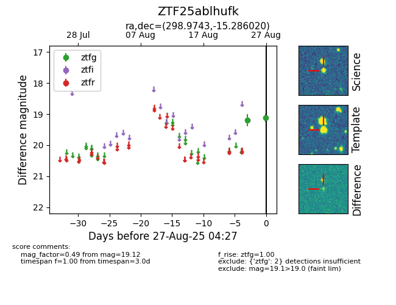

FINK: ZTF25ablhufk
Lasair: ZTF25ablhufk
ALeRCE: ZTF25ablhufk
ZTF25ablhufk (ztf,fink)
equatorial (ra, dec) = (298.9743,-15.28602)
galactic (l, b) = (26.0074,-21.00833)

last atlaso=19.22, ztfg=19.12
1 atlaso, 2 ztfg detections